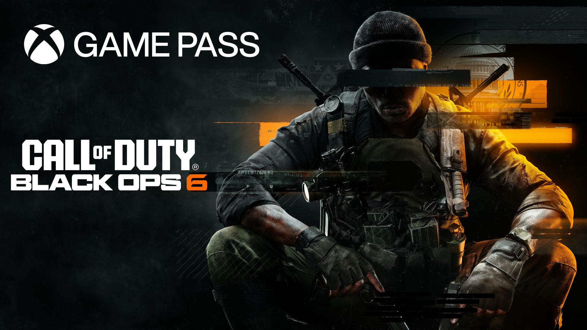

Em "Guardians of the Galaxy", os jogadores assumem o papel de Peter Quill, também conhecido como Star-Lord, e lideram os Guardiões em uma jornada intergaláctica. A equipe enfrenta uma série de desafios enquanto tenta salvar o universo de uma nova ameaça, desenvolvendo seus laços e enfrentando dilemas morais ao longo do caminho.
Menu
Gerais
The Guardians of the Galaxy
Um jogo de ação e aventura onde os jogadores controlam Peter Quill (Senhor das Estrelas) e lideram os Guardiões da Galáxia em uma nova e emocionante missão para salvar o universo.
Por Isaque G. S. Brandão | 01/07/2024
Apresentação
Início
A história de "Guardians of the Galaxy" começa com os Guardiões enfrentando uma crise intergaláctica provocada por uma decisão impulsiva de Peter Quill. Os jogadores são introduzidos ao vibrante universo dos Guardiões, onde cada membro da equipe traz suas habilidades e personalidades únicas para a dinâmica do grupo. A narrativa explora temas de amizade, responsabilidade e redenção, à medida que a equipe navega por uma série de eventos catastróficos.
Trailer do jogo
"Guardians of the Galaxy"
Desenvolvimento
Os jogadores assumem o papel de Star-Lord, explorando diversos planetas e enfrentando inimigos em combates frenéticos. Cada membro da equipe possui habilidades únicas que podem ser usadas estrategicamente em batalha. A dinâmica entre os personagens é um ponto central do jogo, com diálogos espirituosos e interações que refletem a camaradagem e os conflitos internos dos Guardiões.
A narrativa do jogo é fortemente influenciada pelas escolhas dos jogadores. Decisões críticas afetam não apenas o desenrolar da história, mas também as relações entre os personagens. Por exemplo, optar por apoiar ou contradizer um membro da equipe pode alterar a forma como ele reage em situações futuras, criando uma experiência de jogo personalizada e envolvente.
O jogo combina momentos de ação intensa com segmentos de exploração e resolução de puzzles, mantendo um equilíbrio entre o combate e a narrativa. A trilha sonora, composta por clássicos dos anos 80, adiciona uma camada extra de nostalgia e diversão à experiência, complementando o tom irreverente e energético do jogo.
Conclusão
"Guardians of the Galaxy" oferece uma experiência de jogo rica e envolvente, capturando a essência dos personagens e do universo Marvel. A combinação de uma narrativa bem construída, combate dinâmico e interações profundas entre os personagens resulta em um jogo que não só entretém, mas também emociona os fãs da franquia.
A Eidos-Montréal conseguiu criar um jogo que equilibra humor, ação e emoção, proporcionando uma jornada memorável pelos confins do espaço. O impacto das decisões do jogador no desenrolar da história e nas relações interpessoais adiciona uma camada de profundidade que incentiva múltiplas jogadas. "Guardians of the Galaxy" é uma adição valiosa ao universo dos jogos baseados em quadrinhos, oferecendo uma aventura galáctica que ressoa tanto com os fãs antigos quanto com os novos.
Veja também
O que esperar de GTA VI
"GTA 6" é o próximo título da popular série de jogos Grand Theft Auto, desenvolvido pela Rockstar Games. Ambientado em um mundo aberto expansivo, o jogo promete entregar uma experiência rica em narrativa, ação e exploração.

Tudo sobre o novo Black Ops 6
"Call of Duty: Black Ops 6" é um futuro jogo de tiro em primeira pessoa da popular sub-série Black Ops, desenvolvido pela Treyarch e publicado pela Activision. O jogo promete uma experiência de combate intensa e narrativa profunda, continuando a tradição da série.